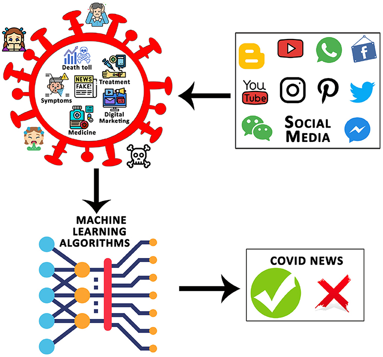
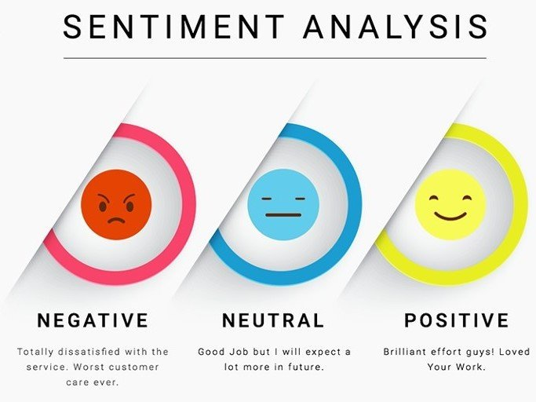

Welcome to my portfolio! In this project, I developed a machine learning model using Naive Bayes and Support Vector Machines (SVM) algorithms for fake news detection. The goal was to accurately identify misleading information in online news articles and prevent the spread of misinformation.


I focused on sentiment analysis of student feedback. By using natural language processing techniques and machine learning algorithms, I aimed to analyze the sentiment behind student feedback to provide insights into the strengths and weaknesses of a course or institution. This project showcases my skills in data analysis, NLP, and machine learning
Showcasing my project on statistical analysis in R Studio. In this project, I utilized the powerful R programming language and its comprehensive set of statistical analysis tools to analyze and interpret data sets, enabling me to draw valuable insights and make informed decisions. Through this project, I gained extensive experience in using R Studio for data analysis and visualization, as well as in applying statistical concepts such as regression analysis, hypothesis testing, and data modeling.